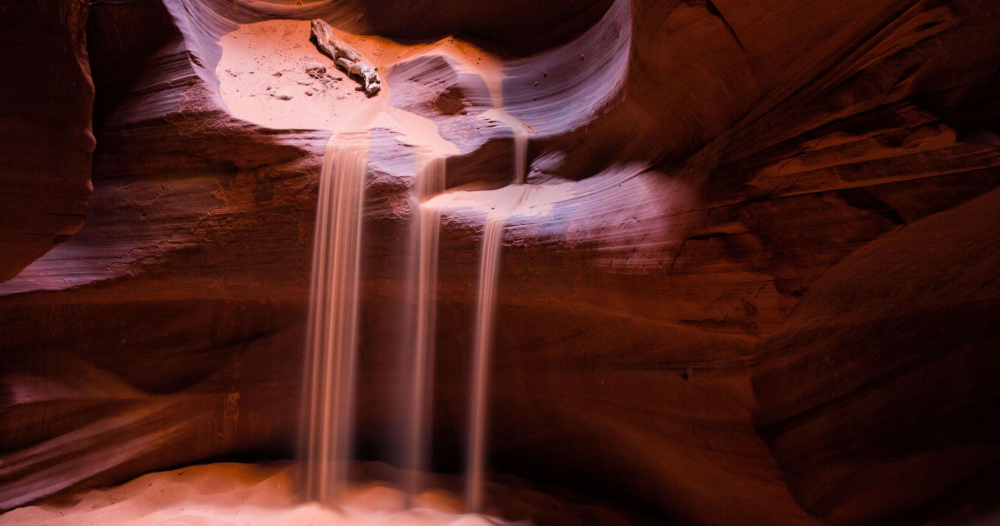
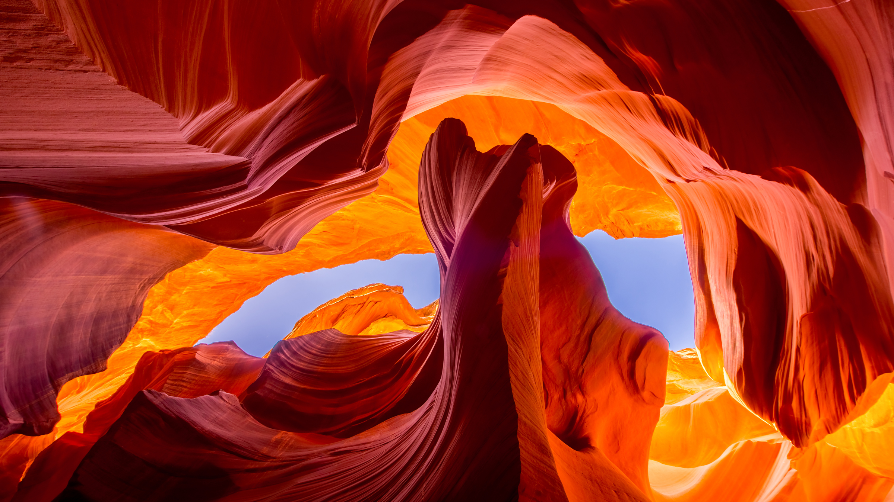
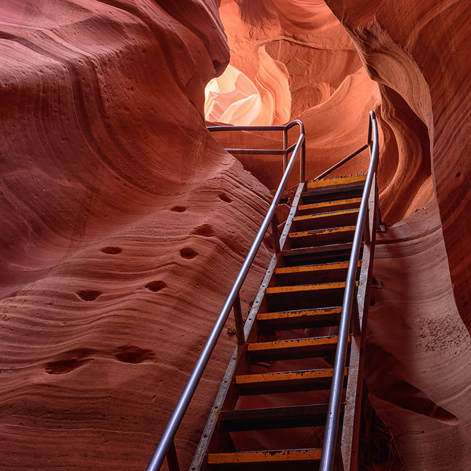

Few geological formations are as picturesque and awe-inspiring as Antelope Canyon, a magnificent slot canyon just east of Page in Northern Arizona. With tall winding walls, it’s a monumental sandstone sculpture. A photographer’s dream, the canyon is known for its wave-like structure and the light beams that shine directly down into the openings of the canyon, creating a supernatural appearance.
History & Nature
Antelope Canyon is the product of millions of years of water erosion. In fact, the Navajo name for Upper Antelope Canyon is “Tse' bighanilini,” which means "the place where water runs through rocks." Once home to herds of pronghorn antelope, the canyon now lies within the LeChee Chapter of the Navajo Nation, and draws nature-lovers near and far for its remarkable, mysterious beauty. The canyon walls climb 120 feet above the stream bed, making it a cathedral of red-hued, swirling sandstone.
Things To Do
Exploring this natural wonder is encouraged, but guided tours are required. There are several authorized tour operators to choose from who will not only bring you to the canyon, but also give you a breadth of information about the history, geology, and culture of the Antelope Canyon area. Photographers will enjoy snapping photos, but the famous light beams are not always visible. Beams occur most often during the summer, with the best views between late March and early October.
Hotels, Lodging & Camping
The nearby city of Page offers plenty of lodging, including hotels, motels and RV parks. Camping is not allowed within Antelope Canyon. The closest campsite available is at Wahweap Marina on Lake Powell.
Hours & Pricing
All areas of the Antelope Canyon are only accessible via guided tour.
Location
| |
 |  |  |